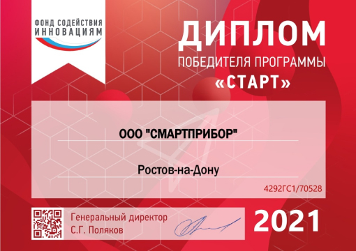
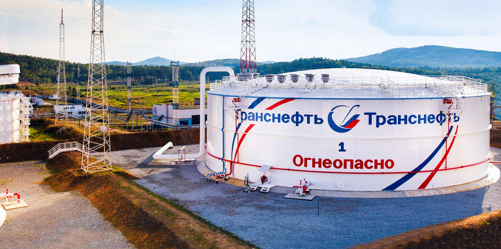

<!DOCTYPE html>
<html lang="ru">
	<head>
		<meta charset="UTF-8" />
		<meta name="viewport" content="width=device-width, initial-scale=1.0" />
		<title>О проекте</title>

		<!-- Подключение стилей -->
		<link rel="stylesheet" href="css/start-style.css" />
		<link rel="stylesheet" href="css/info.css" />
	</head>
	<body></body>
</html>

<body>
	<header class="header">
		<div class="burger" id="burger"></div>

		<a href="index.html" class="logo">
			
		</a>

		<menu class="menu" id="menu">
			<a href="index.html" class="menu-item">Главная</a>
			<a href="devices.html" class="menu-item">Устройства</a>
			<a class="menu-item active">О проекте</a>
			<a href="documents.html" class="menu-item">Документация</a>
			<a href="news.html" class="menu-item">Новости</a>
		</menu>

		<a href="#footer" class="buy-button">Заказать</a>
	</header>

	<main class="main">
		<!-- Банер -->
		<section class="start">
			<div class="container">
				<div class="start__inner">
					<div class="left__block">
						<h2 class="start-title">Плотномер-вискозиметр “СМАРТ”</h2>
						<p class="start-text">
							Делаем акцент на <span>качестве</span>, <span>точности</span> и
							<span>функциональности</span> наших устройств, созданных для
							вашего производства
						</p>
						<div class="start__list-btn">
							<a class="start-btn">Подробнее</a>
							<a href="#footer" class="start-btn">Заказать</a>
						</div>
					</div>

					<div class="right__block">
						<div class="news__list" id="news__list">
							
						</div>
					</div>
				</div>
			</div>
		</section>

		<!-- Поддержка -->
		<section class="support">
			<div class="container">
				<div class="support__inner">
					<div class="support-info">
						<h2 class="support-title">При поддержке:</h2>
						<p class="support-text">
							ООО «СМАРТПРИБОР» организовано благодаря поддержке Фонда
							содействия инновациям – поддержан проект по разработке опытных
							образцов интеллектуального плотномера сжиженных газов.
						</p>
					</div>
					
				</div>
			</div>
		</section>

		<!-- Проект -->
		<section class="project">
			<div class="container">
				<div class="project__inner">
					<h2 class="project-title">О проекте</h2>
					<p class="project-text-top">
						Целью работ, выполняемых по гранту Фонда, являлась разработка
						конструкции и технологических процессов изготовления измерителя
						плотности сжиженных газов и жидкостей, основанного на использовании
						механических систем со стабильными частотными характеристиками.
						Предполагалось использовать имевшийся у команды проекта научный
						задел и опыт разработки промышленных измерительных приборов, для
						разработки отечественного погружного вибрационного плотномера
						сжиженных углеводородных газов (СУГ).
					</p>
					<div class="project__block">
						<div class="project__block-text">
							<p class="project-text">
								В процессе выполнения работы, также требовалось подтвердить
								имеющиеся теоретические предположения о единой функции
								зависимости частоты колебаний вибратора камертонного типа, от
								плотности окружающей его среды в диапазоне плотностей сжиженных
								газов (420 ÷ 680 кг/м3). Ранее проведённые исследования и
								эксперименты показали, возможность использования единой функции
								для области плотностей газов (до 10 кг/м3) и жидкостей (от 680
								до 2000 кг/м3), что позволило разработать метод калибровки
								вибрационных плотномеров по двум средам – воздуху и жидкости с
								известной плотностью (например, дистиллированная вода). Этот
								метод впервые был реализован на плотномере 804 (ООО
								«Пьезоэлектрик»), в разработке которого принимал участие
								руководитель проекта.
							</p>
							<p class="project-text">
								Основной особенностью измерения в СУГ является наличие
								постоянного высокого давления (от 0,6 до 2 МПа), которое влияет
								на работу вибропреобразователя и является источником
								дополнительной погрешности. Для снижения влияния давления на
								точность измерения требовалось разработать новую конструкцию
								камертонного вибропреобразователя, в которой влияние давления
								будет значительно снижено, относительно базовой конструкции
								(вибропреобразователь плотномера 804). В процессе выполнения
								работ по гранту Фонда, такая конструкция была разработана и
								запатентована в качестве изобретения.
							</p>
						</div>
						<div class="project__block-img">
							
							<p class="project-img-text">Патент на устройство</p>
						</div>
					</div>
				</div>
			</div>
		</section>

		<!-- Задачи -->
		<section class="task">
			<div class="container">
				<div class="task__inner">
					<h2 class="task-title">
						Кроме конструкции камертонного преобразователя плотности также была:
					</h2>
					<div class="task__list">
						<div class="task-column">
							<p class="task-colum-text">
								Разработана конструкция,  электрическая схема  и программное
								обеспечение  интеллектуального плотномера сжиженных газов (ИПСГ)
								(смотри рисунок ниже). 
							</p>
							<p class="task-colum-text">
								Изготовлены опытные образцы ИПСГ и проведены испытания, которые
								подтвердили соответствие разработанного ИПСГ требованиям
								Технического задания. 
							</p>
							<p class="task-colum-text">
								Исследованы возможности применения разработанного
								вибропреобразователя для измерения вязкости жидкостей.
							</p>
						</div>
						<div class="task-column">
							<p class="task-colum-text">
								Исследованы особенности представленных на рынке плотномеров
								жидкостей и газов и сделаны выводы о необходимости разработки
								единого универсального прибора для измерения плотности жидкостей
								(включая сжиженные газы) и газов.
							</p>
							<p class="task-colum-text">
								Разработана и изготовлена оснастка для произведения и испытания 
								ИПСГ в сжиженном пропане.
							</p>
							<p class="task-colum-text">
								Разработан  комплект  конструкторской документации и проект
								технических условий  на ИПСГ.
							</p>
						</div>
					</div>
				</div>
			</div>
		</section>

		<!-- Девайс -->
		<section class="device">
			<div class="container">
				<div class="device__inner">
					
				</div>
				<div class="device__list">
					<p class="device-text">
						Первичный преобразователь (запатентован) представляет собой стальной
						трубчатый корпус, в котором закреплены жестко соединенный с
						камертоном пьезопреобразователь и термопреобразователь.
					</p>
					<p class="device-text">
						Электронный блок формирует электрические сигналы, передаваемые на
						пьезопреобразователь для возбуждения механических колебания
						вибропреобразователя плотности камертонного типа. 
					</p>
					<p class="device-text">
						Электронный блок преобразует измененное значение резонансной частоты
						вибропреобразователя в значения плотности. Далее, проводится
						корректировка полученных значений для снижения дополнительной
						погрешности от влияния температуры и других факторов, после чего,
						формируются выходные сигналы (аналоговый тока и цифровой), а также
						отображает на дисплее значение плотности в кг/м3.
					</p>
					<p class="device-text">
						Плата индикации и управления плотномера содержит
						жидкокристаллический дисплей и кнопки, позволяющие производить
						операции контроля, настройки и калибровки плотномера.
					</p>
				</div>
			</div>
		</section>

		<!-- Результат -->
		<section class="result">
			<div class="container">
				<div class="result__inner">
					<h2 class="result-title">Полученные результаты</h2>
					<p class="result-text">
						Результаты работ по первому этапу проекта, исследование рынка
						аналогичных промышленных приборов, а, также, последних изменений
						этого рынка, показали необходимости разработки единого
						универсального прибора для измерения плотности жидкостей (включая
						сжиженные газы) и газов, а, также, вязкости жидкостей.
					</p>
					<p class="result-text">
						Кроме того, на передний план вышла необходимость замены импортных
						приборов российскими аналогами в новых и существующих проектах (в
						том числе, уже установленных у потребителя), поэтому, было принято
						решение о продолжении разработки для создания продукта, как минимум,
						не уступающего импортным аналогам по функциональным возможностям.
					</p>
					<p class="result-text underline">
						За второй год работ командой проекта достигнуты следующие
						результаты:
					</p>
					<ul class="result__list">
						<li class="result-item">
							<p class="result-text">
								Разработаны и изготовлены высокоэффективные модули
								вибропреобразователя плотности и вязкости;
							</p>
						</li>
						<li class="result-item">
							<p class="result-text">
								Разработаны и изготовлены экспериментальные, а затем и опытные
								образцы плотномеров-вискозиметров;
							</p>
						</li>
						<li class="result-item">
							<p class="result-text">
								Разработаны методики настройки, калибровки, предварительных и
								итоговых испытаний плотномеров-вискозиметров;
							</p>
						</li>
						<li class="result-item">
							<p class="result-text">
								Разработана конструкторская и технологическая документация
								интеллектуального плотномера-вискозиметра «СМАРТ»;
							</p>
						</li>
						<li class="result-item">
							<p class="result-text">
								Разработаны технические условия на плотномер-вискозиметр;
							</p>
						</li>
						<li class="result-item">
							<p class="result-text">
								Разработана эксплуатационная документация;
							</p>
						</li>
						<li class="result-item">
							<p class="result-text">
								Найдены партнёры для организации производства;
							</p>
						</li>
						<li class="result-item">
							<p class="result-text">
								Организовано производство и выпущена первая партия приборов для
								проведения испытаний и сертификаций;
							</p>
						</li>
						<li class="result-item">
							<p class="result-text">
								Проведены испытаний на соответствие требованиям ТР ТС 020/2011 и
								ТР ТС 012/2011, выпущена декларация (ТР ТС 020 2011 № 17997743
								от 17.08.2023) и получен сертификат соответствия (ТР ТС 012 2011
								№ ЕАЭС RU C-RU.АЖ58.В.04560 23).
							</p>
						</li>
					</ul>
				</div>
			</div>
		</section>

		<!-- Модель -->
		<section class="model">
			<div class="container">
				<div class="model__inner">
					<p class="model-text">
						Модельный ряд разработанного плотномера-вискозиметра составлен с
						учётом существующих на рынке устройств. Предусмотрены оригинальные
						варианты исполнения, рассчитанные как на наиболее полное
						удовлетворение запросов потребителей в новых и разрабатываемых
						проектах, так и варианты исполнения, предусматривающие замену
						существующих импортных аналогов на действующих предприятиях без
						доработок мест установки и электрических подключений. Прибор
						полностью совместим с импортными аналогами, при этом, потребителю
						обойдётся в разы дешевле. Проект является полностью российским и
						позволяет проводить гибкую ценовую политику с целью охвата всех
						потребителей упомянутых выше конкурентных устройств и их аналогов на
						российском рынке.
					</p>
					
				</div>
			</div>
		</section>

		<!-- Проект -->
		<section class="draft">
			<div class="container">
				<div class="draft__inner">
					<h2 class="draft-title">Варианты исполнения и модули СМАРТ</h2>
					<ul class="draft__list">
						<li class="draft-item">
							
							<p class="draft-img-title">СМАРТ-х-х.1хх</p>
						</li>
						<li class="draft-item">
							
							<p class="draft-img-title">СМАРТ-х-х.4хх</p>
						</li>
					</ul>
					<p class="draft-text">
						Плотномер-вискозиметр состоит и трёх модулей, которые могут
						поставляться потребителю отдельно, в том числе в качестве деталей
						других устройств (массовые расходомеры и прочее). Модульная
						концепция плотномера-вискозиметра позволяет организовать продажи не
						только готового устройства плотномера-вискозиметра, но и отдельных
						модулей другим производителям аналогичной продукции, а также служить
						базой для разработки родственных устройств, например, вибрационных
						сигнализаторов уровня жидкостей или сыпучих сред.
					</p>
					<ul class="draft__list">
						<li class="draft-item">
							
							<p class="draft-img-title">Модуль вибропреобразователя</p>
						</li>
						<li class="draft-item">
							
							<p class="draft-img-title">Измерительный модуль</p>
						</li>
						<li class="draft-item">
							
							<p class="draft-img-title">Плотнометр вискозиметр</p>
						</li>
					</ul>
				</div>
			</div>
		</section>

		<!-- Конец -->
		<section class="end">
			
			<div class="container">
				<p class="end-text">
					Плотномер-вискозиметр «СМАРТ» полностью перекрывает потребности
					основных потребителей импортных аналогов на нефтегазовых предприятиях,
					компаний по транспортировке и переработка нефти и газа, также
					предприятия химической и пищевая промышленности.
				</p>
			</div>
		</section>

		<!-- Обратная связь -->
		<section class="feedback">
			<div class="container">
				<div class="feedback__inner">
					<div class="f-left__block">
						<h3 class="feedback-title">
							Хотите сделать заказ?<br />Мы ждем вашей заявки!
						</h3>
						<ul class="f-contact__list">
							<div class="contact-item">
								
								<a href="tel: +79612940260" class="contact-link"
									>+7 (961) 294-02-60</a
								>
							</div>
							<div class="contact-item">
								
								<a href="mailto: smartpribor@inbox.ru" class="contact-link"
									>smartpribor@inbox.ru</a
								>
							</div>
							<div class="contact-item">
								
								<a href="mailto: info@smartpribor.com" class="contact-link"
									>info@smartpribor.com</a
								>
							</div>
						</ul>
						<p class="feedback-text">
							*Можете обращаться к нам по любым вопросам. Будем рады помочь и
							проконсультировать вас!
						</p>
					</div>
					<div class="f-right__block">
						<h3 class="feedback-title">Не хотите писать нам лично?</h3>
						<p class="feedback-text">
							*Оставьте свой номер телефона или почту, а мы свяжемся с вами в
							близжайшее время.
						</p>
						<form action="" class="feedback__form">
							<input
								type="tel"
								class="feedback-number"
								placeholder="Номер телефона:"
							/>
							<input type="email" class="feedback-mail" placeholder="Почта:" />
							<button class="feedback-button" type="submit">
								Отправить заявку
							</button>
						</form>
					</div>
				</div>
			</div>
		</section>
	</main>

	<footer class="footer" id="footer">
		<div class="container">
			<div class="footer__inner">
				<p class="footer-text">©️ 2001-2023 ООО “СМАРТРИБОР”</p>
				<p class="footer-text">
					Ростовская область, г.о. город Ростов-на-Дону, г. Ростов- на-дону, ул.
					Малиновского, влд. 3, плмещение 7 / 8.
				</p>
			</div>
		</div>
	</footer>

	<!-- ПОДКЛЮЧЕНИЕ СКРИПТОВ -->
	<script src="js/script.js"></script>
	<script src="js/project.je"></script>
</body>
